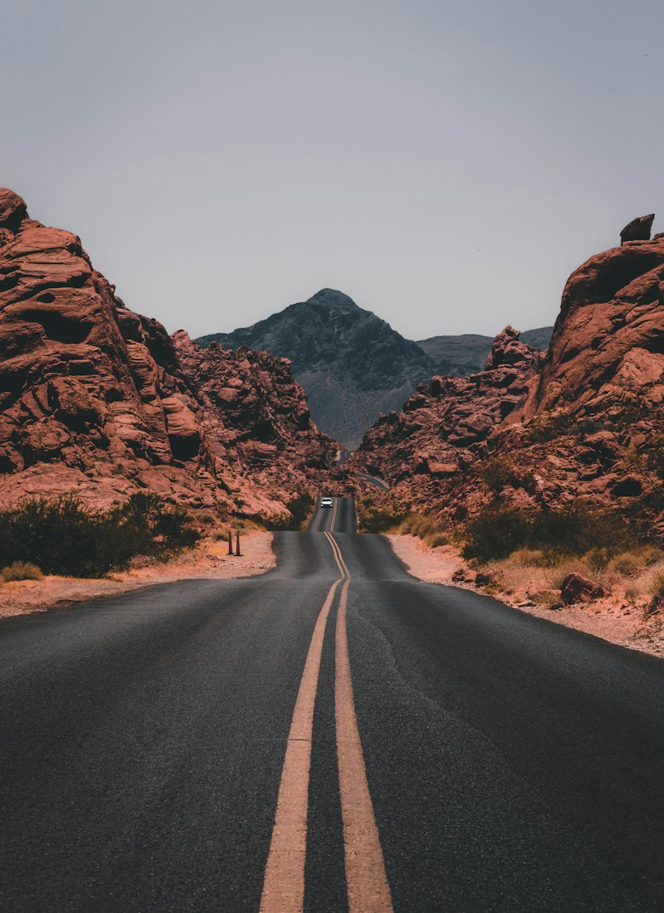
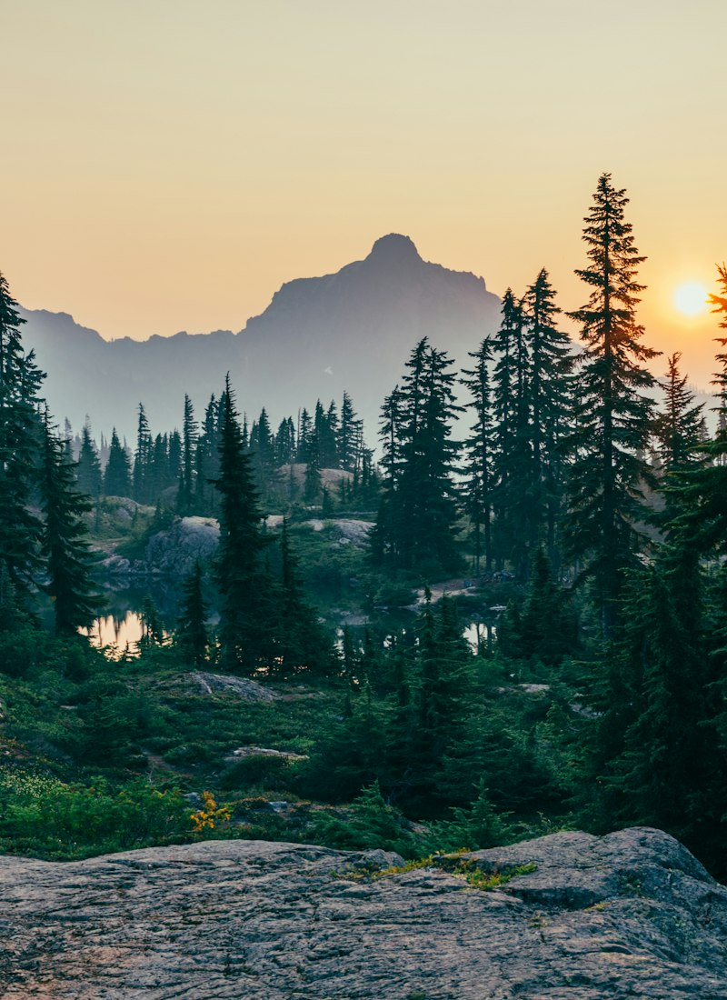

Your library.
A different kind of movie night.
Three ways to bring Première to the desktop. The same warm charcoal, Inter typography and VLC orange, with more room for the films you came to watch.
 Cinema
CinemaLet the next film find you.
A featured title, immersive artwork and familiar shelves. The closest to a Netflix-style evening browse.
Explore Cinema
ArchiveArchive is selected.
A poster-led movie catalogue and a music library with square album covers. Direct search, familiar filters and your queue close by.
Open selected Archive
SpotlightStay with the story.
A title takes centre stage while your collection stays in reach. Seasons and episodes unfold in the same view.
Explore SpotlightOpen and try each direction. Search, select a title and open its details. The library is illustrative, and Play shows preview feedback.
No files are scanned. All imagery and fonts are local. Archive is the selected direction for the Rust/Slint implementation hand-off.